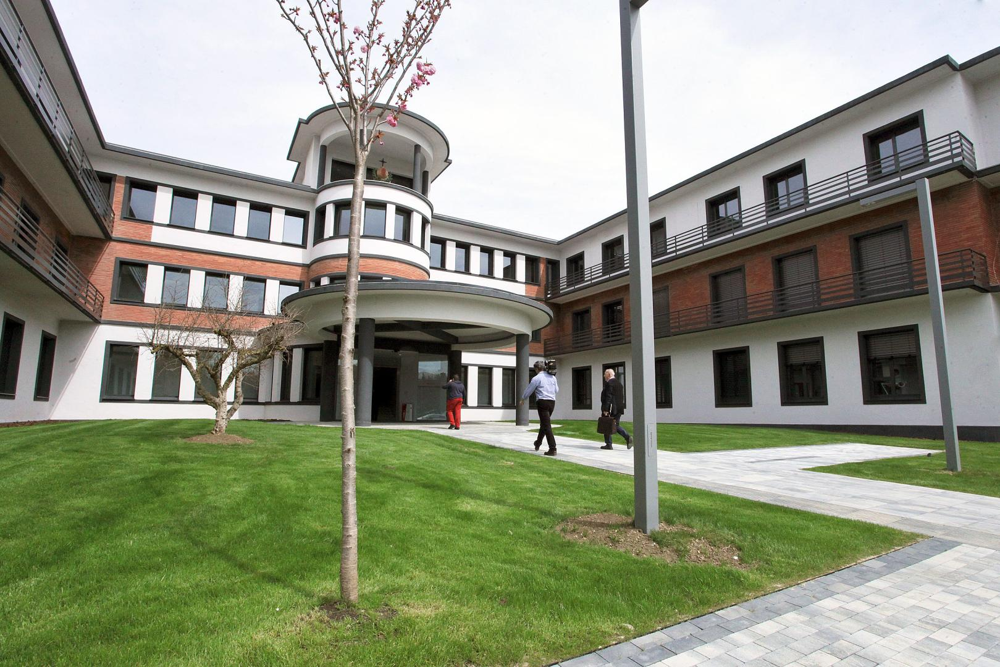
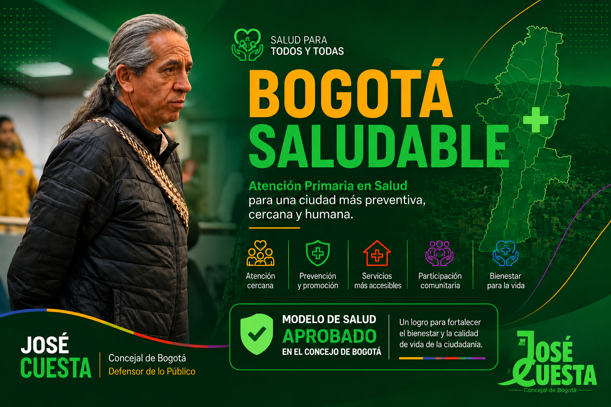
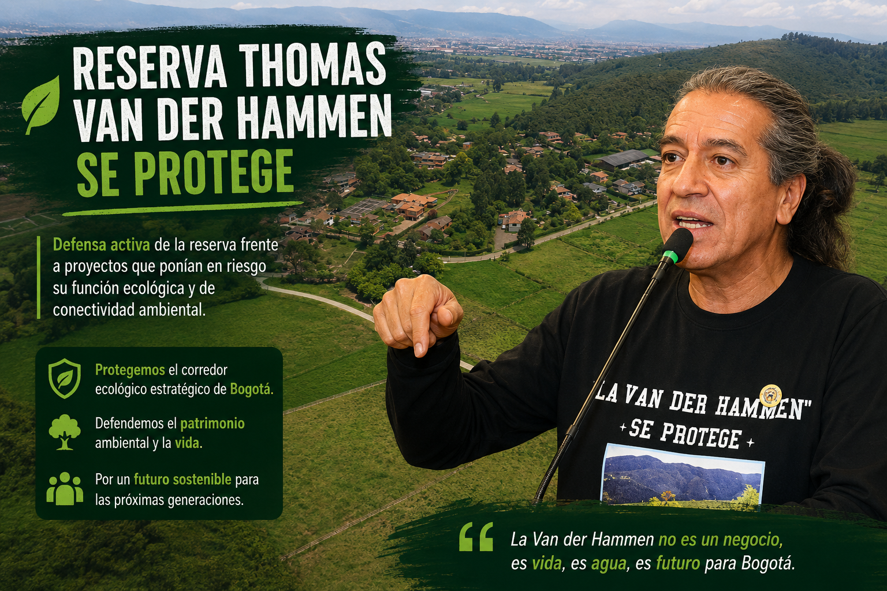
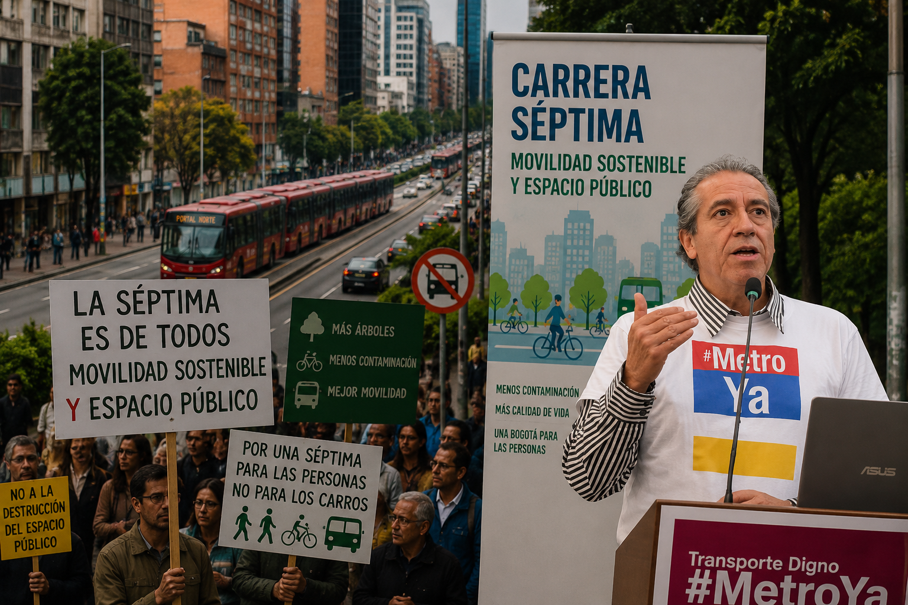

Trabajando por una Bogotá mejor
Impulsando iniciativas en salud pública, ambiente y participación ciudadana.
Ver propuestasImpacto y Resultados

Hospital San Juan de Dios
Participación en las iniciativas que promovieron la recuperación y restauración del complejo hospitalario más emblemático de Bogotá.
Recuperación y protección del patrimonio hospitalario

Bogotá Saludable
Impulso al Modelo de Atención Primaria en Salud, fortaleciendo la prevención, el trabajo comunitario y el acceso cercano a los servicios de salud.
Modelo de Salud aprobado en el Concejo

Reserva Thomas Van der Hammen
Defensa activa de la reserva frente a proyectos que ponían en riesgo su función ecológica y de conectividad ambiental.
Protección del corredor ecológico estratégico de Bogotá

Universidad Distrital
Impulso a la creación de la carrera de Medicina y fortalecimiento de la educación pública.
Educación superior pública

Defensa de la Carrera Séptima
Participación en debates y control político sobre proyectos de movilidad que impactan uno de los corredores más importantes de Bogotá.
Movilidad sostenible y espacio público